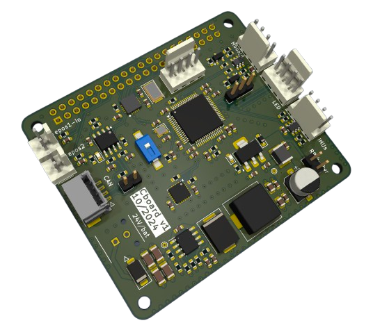

PCB for managing connections and external sensors in a Lower Limb Prosthesis
This PCB was embedded in a robotic device for rehabilitation: a robotic lower-limb prosthesis. The PCB includes an STM32 microcontroller, peripherals for CAN communication with an EPOS motor driver (Maxon Motors), an amplification circuit for sensing battery level and prosthesis temperature, and I2C and UART buses for communication with external sensors (sEMG, IMUs, force sensors, etc.). In addition, a buck regulator was used to power all the circuits, and it was designed to meet EMI emission limits for electromagnetic compatibility (EMC).
Details: 4-layer PCB manufactred and assembled in JLCPCB.
Designed with KiCAD